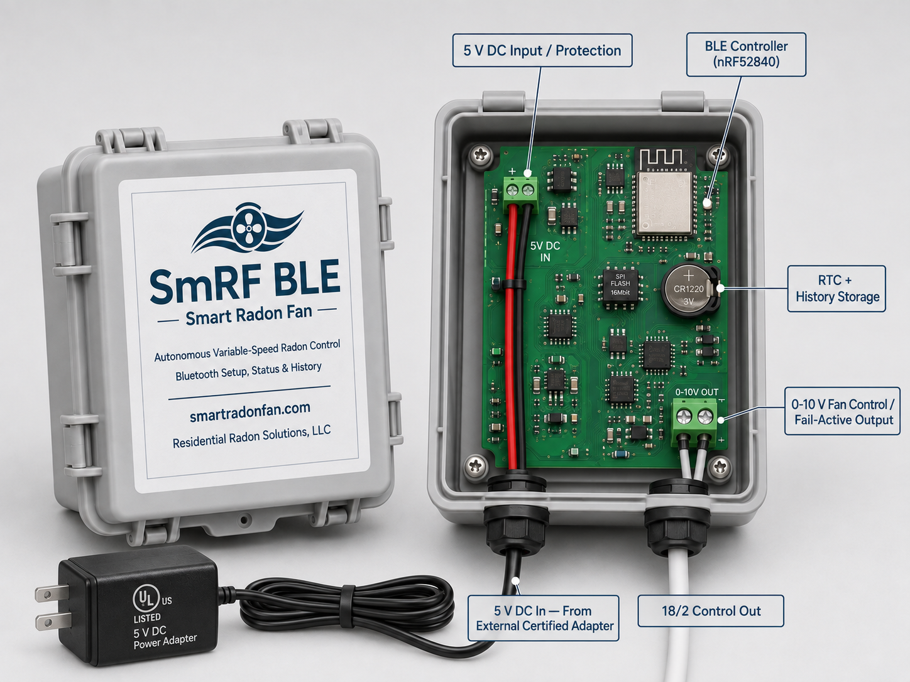

Residential Radon Solutions, LLC
Automated variable-speed radon mitigation
Smart Radon Fan (SmRF) brings closed-loop control to radon mitigation
A continuous radon monitor measures the result that matters. SmRF compares that measurement with a selected radon target and adjusts a compatible variable-speed fan. The cycle repeats as new radon measurements arrive.
The control loop remains local. Connectivity is a choice: SmRF VS-WiFi can add remote Viewer verification, while SmRF VS-BLE uses a nearby smartphone for local setup and status without requiring permanent home WiFi.
Set the radon target. SmRF adjusts the fan locally.
SmRF: two connectivity options
Same closed-loop radon control. Different connectivity. Both versions use CRM feedback, a local controller, a hardwired 0–10 V fan command, and a compatible variable-speed EC radon fan.
SmRF VS-WiFi
Variable-speed control + optional Viewer

- Remote verification
- Installer fleet dashboard
- In-Viewer issues + trends
SmRF VS-BLE
Variable-speed control + smartphone UI

- Local setup + status
- No home WiFi required
- Smartphone interface
Why variable-speed control?
Early SmRF work demonstrated that radon responds to commanded fan operation. Variable-speed fans take the next logical step: instead of choosing only ON or OFF, SmRF can regulate the amount of mitigation toward a specified radon level.
Target-based control
The installer selects the desired radon level; SmRF adjusts fan output toward that target.
Adaptive fan speed
Mitigation can increase or decrease as radon and building conditions change.
Simple hardwired command
The fan receives a local 0–10 V command over ordinary 18/2 cable.
Local autonomy
The radon-control loop continues locally regardless of the connectivity option selected.
How we got here: field evidence from fixed-speed control
SmRF began by automating conventional fixed-speed radon fans. That prototype work was the stepping stone to variable-speed control and, importantly, produced real-world data showing the relationship between commanded fan operation and measured indoor radon.
Radon response to fan state

What the fixed-speed prototype established
- Radon measurement can drive mitigation decisions.
- Indoor radon responds materially to changes in fan operation.
- Local automation, logging, reporting, and fault handling can operate as one platform.
- Variable-speed control is the more complete solution: regulate toward a selected radon level rather than alternate between zero and full output.
SmRF Viewer — optional remote verification for VS-WiFi
SmRF VS-WiFi can add the Viewer as a connected layer. An installer account provides one organized view of the SmRF installations it manages, including radon history, fan output, report timing, outstanding issues, and service information.
One installer account. Every claimed VS-WiFi installation.
The Viewer organizes daily radon, 7-day and 30-day averages, average fan utilization, system status, last-report timing, fleet filters, outstanding issues, and device-level history. A site-specific Claim Code associates each SmRF with the appropriate installer account.

Local setup and visible operation
The control system remains local in both SmRF versions. The current VS-WiFi managed interface shows sensor connection, system state, selected radon target, execution frequency, chart status, and reporting state. VS-BLE is intended to provide the corresponding setup and status workflow through a smartphone interface.
Local control
- Select the target radon level.
- Set control execution behavior.
- Review current sensor and system status.
- Control continues locally without cloud dependency.

This is what we’re building. Are you interested?
We welcome conversations with radon fan manufacturers, equipment distributors, mitigation installers, contract manufacturers, and research organizations interested in CRM-based variable-speed mitigation — with either connected Viewer capability or a simpler BLE/local workflow.
SmRF platform
- CRM-based closed-loop radon control
- Target-based variable-speed fan algorithms
- Hardwired 0–10 V fan command over 18/2 cable
- VS-WiFi: optional Viewer, fleet trends, in-Viewer issues, remote verification
- VS-BLE: local smartphone setup/status, no permanent home WiFi required
Patent pending. Development and field-validation platform; final production configuration and certification are in progress.